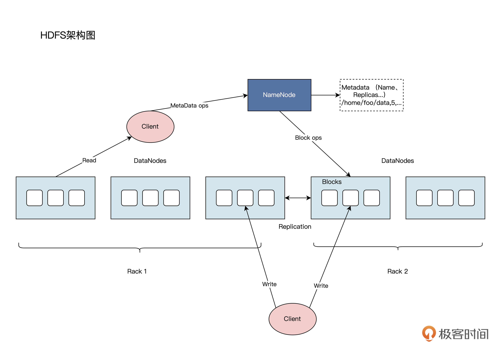
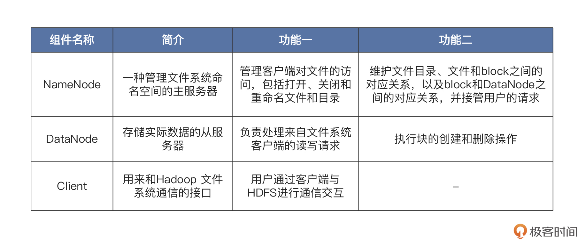
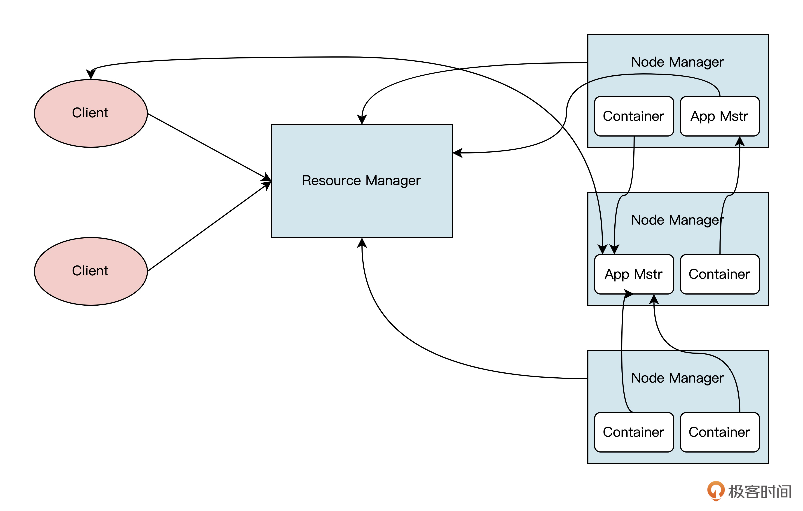
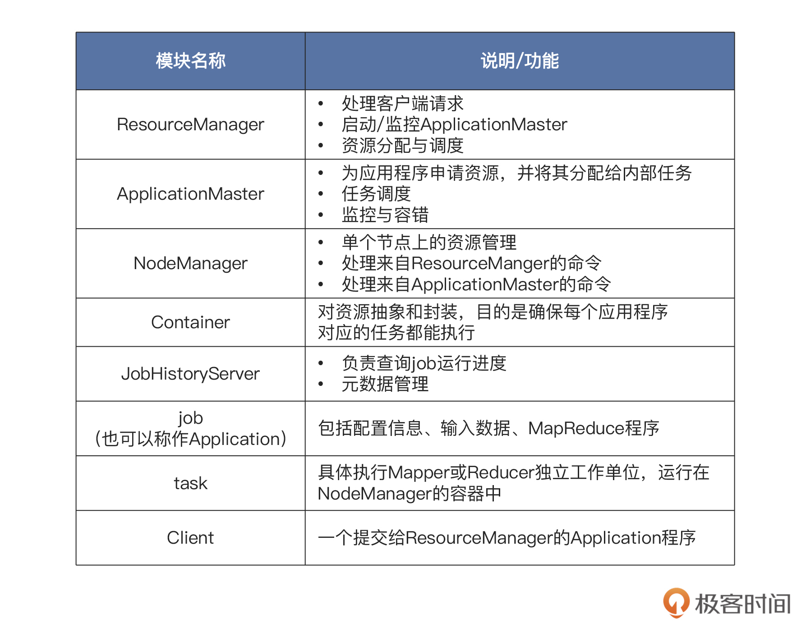
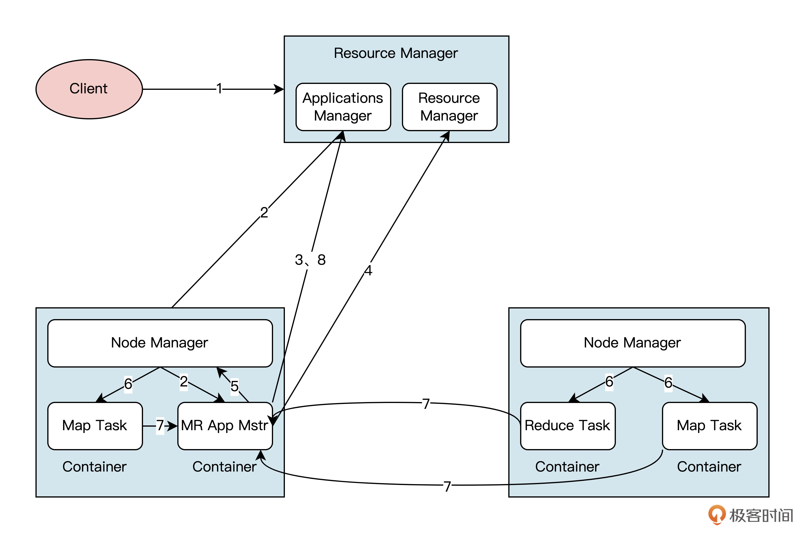
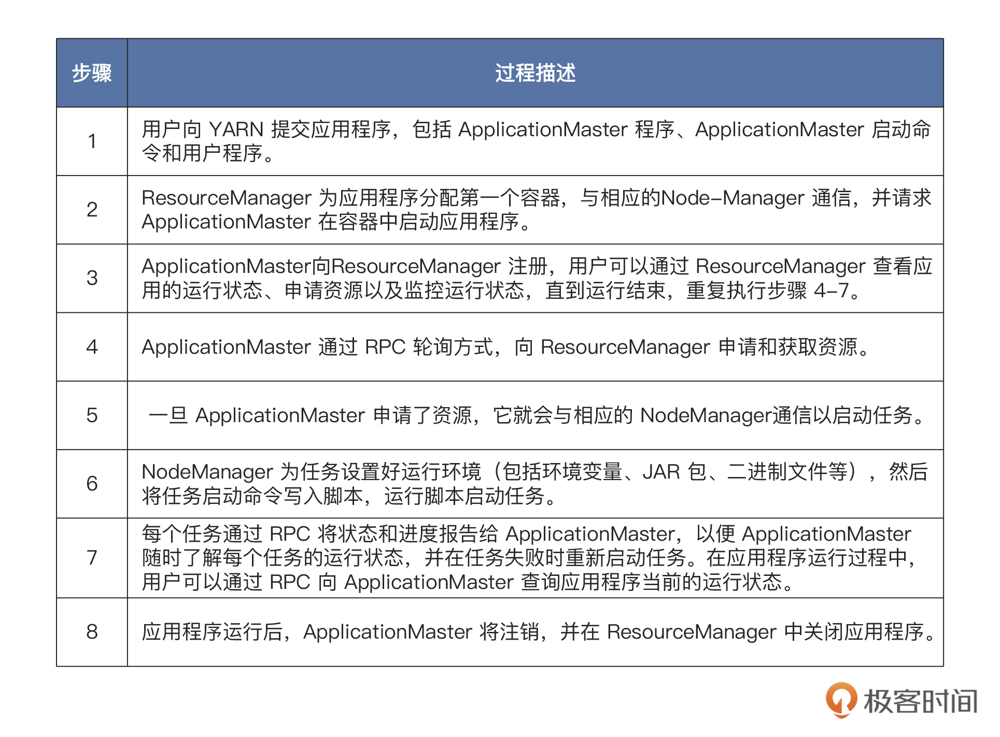
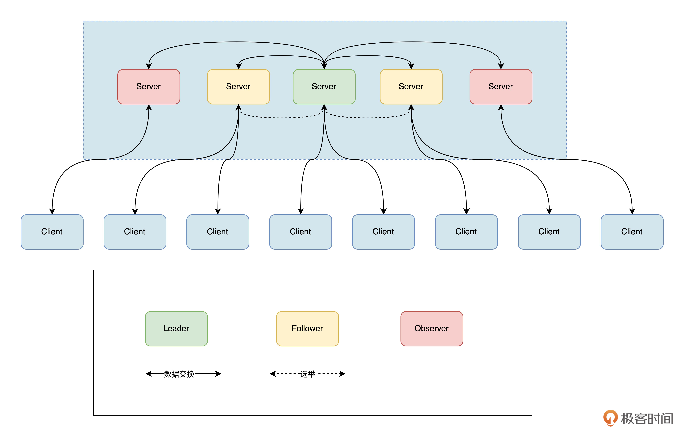

- 00 开篇词 练好基本功，优秀工程师成长第一步.md
- 01 CISC & RISC：从何而来，何至于此.md
- 02 RISC特性与发展：RISC-V凭什么成为“半导体行业的Linux”？.md
- 03 硬件语言筑基（一）：从硬件语言开启手写CPU之旅.md
- 04 硬件语言筑基（二）_ 代码是怎么生成具体电路的？.md
- 05 指令架构：RISC-V在CPU设计上到底有哪些优势？.md
- 06 手写CPU（一）：迷你CPU架构设计与取指令实现.md
- 07 手写CPU（二）：如何实现指令译码模块？.md
- 08 手写CPU（三）：如何实现指令执行模块？.md
- 09 手写CPU（四）：如何实现CPU流水线的访存阶段？.md
- 10 手写CPU（五）：CPU流水线的写回模块如何实现？.md
- 11 手写CPU（六）：如何让我们的CPU跑起来？.md
- 12 QEMU：支持RISC-V的QEMU如何构建？.md
- 13 小试牛刀：跑通RISC-V平台的Hello World程序.md
- 14 走进C语言：高级语言怎样抽象执行逻辑？.md
- 15 C与汇编：揭秘C语言编译器的“搬砖”日常.md
- 16 RISC-V指令精讲（一）：算术指令实现与调试.md
- 17 RISC-V指令精讲（二）：算术指令实现与调试.md
- 18 RISC-V指令精讲（三）：跳转指令实现与调试.md
- 19 RISC-V指令精讲（四）：跳转指令实现与调试.md
- 20 RISC-V指令精讲（五）：原子指令实现与调试.md
- 21 RISC-V指令精讲（六）：加载指令实现与调试.md
- 22 RISC-V指令精讲（七）：访存指令实现与调试.md
- 23 内存地址空间：程序中地址的三种产生方式.md
- 24 虚实结合：虚拟内存和物理内存.md
- 25 堆&栈：堆与栈的区别和应用.md
- 26 延迟分配：提高内存利用率的三种机制.md
- 27 应用内存管理：Linux的应用与内存管理.md
- 28 进程调度：应用为什么能并行执行？.md
- 29 应用间通信（一）：详解Linux进程IPC.md
- 30 应用间通信（二）：详解Linux进程IPC.md
- 31 外设通信：IO Cache与IO调度.md
- 32 IO管理：Linux如何管理多个外设？.md
- 33 lotop与lostat命令：聊聊命令背后的故事与工作原理.md
- 34 文件仓库：初识文件与文件系统.md
- 35 Linux文件系统（一）：Linux如何存放文件？.md
- 36 Linux文件系统（二）：Linux如何存放文件？.md
- 37 浏览器原理（一）：浏览器为什么要用多进程模型？.md
- 38 浏览器原理（二）：浏览器进程通信与网络渲染详解.md
- 39 源码解读：V8 执行 JS 代码的全过程.md
- 40 内功心法（一）：内核和后端通用的设计思想有哪些？.md
- 41 内功心法（二）：内核和后端通用的设计思想有哪些？.md
- 42 性能调优：性能调优工具eBPF和调优方法.md
- 先睹为快：迷你CPU项目效果演示.md
- 加餐01 云计算基础：自己动手搭建一款IAAS虚拟化平台.md
- 加餐02 学习攻略（一）：大数据&云计算，究竟怎么学？.md
- 加餐03 学习攻略（二）：大数据&云计算，究竟怎么学？.md
- 加餐04 谈谈容器云与和CaaS平台.md
- 加餐05 分布式微服务与智能SaaS.md
- 国庆策划01 知识挑战赛：检验一下学习成果吧！.md
- 国庆策划02 来自课代表的学习锦囊.md
- 国庆策划03 揭秘代码优化操作和栈保护机制.md
- 温故知新 思考题参考答案（一）.md
- 用户故事 我是怎样学习Verilog的？.md
- 结束语 心若有所向往，何惧道阻且长.md
加餐03 学习攻略（二）：大数据&云计算，究竟怎么学？
你好，我是LMOS。
上节课我们从谷歌的三驾马车开始，学习了大数据三件套的设计思路，可惜谷歌三驾马车作为商用软件，只开放了论文来讲解原理，却并没有开放出对应的源代码。
为了帮你更好地理解这些核心技术是怎么落地的，这节课我会简单介绍一下另外三个基础组件的设计原理，它们也是开源大数据生态中的重要角色。
HDFS设计原理
首先我们来说说HDFS，它的全称是Hadoop Distributed File System，你可以理解为一个可以由低成本的普通PC机组成的大规模分布式文件系统。
HDFS的架构图如下所示：

其实，HDFS的核心架构和[上节课]讲过的GFS，架构思路是一脉相承的。
HDFS基于主/从架构设计，其集群的核心是由NameNode（充当主服务器）、DataNode（充当从服务器）、Client这三部分构成的。各部分的含义和功能，你可以参考后面这张表：- 
通过这几个组件的配合，我们就拥有了一个可靠的分布式文件系统。
那么HDFS有哪些优势呢？主要是后面这四点：
- 容错性：可以在集群中的任意节点发生故障时继续运行，这能保证数据的安全性。
- 大数据处理能力：HDFS可以存储海量的数据，并支持大规模并行计算。
- 高可靠性：HDFS将文件分割成多个块存储，并在集群中多次复制，可以保证数据的高可靠性。
- 简单易用：HDFS提供了简单易用的文件存储和访问接口，与其他系统集成很方便。
但是，HDFS也有一些不足，具体包括：
- 性能相对较低：不适合低延迟的数据访问。
- 不支持随机写入：不支持随机写入，只能进行顺序写入。
- 对小文件不友好：不能很好地存储小文件，因为它需要将小文件分割成大块存储，而这会导致存储和计算效率低下。
总之，HDFS能够高效地存储海量数据，并支持大规模并行计算。但是，HDFS 不适合用于低延迟的数据访问，也不适合用于存储小文件。
说到这，我们就不难推测HDFS的适用场景了——它适合用在海量数据存储和大规模数据分析的场景中，例如搜索引擎、广告系统、推荐系统等。
YARN设计原理
其实早期Hadoop也按照Google Mapreduce的架构，实现了一套Mapreduce的资源管理器，用于管理和调度MapReduce任务所需要的资源。但是JobTracker存在单点故障，它承受的访问压力也比较大，这影响了系统的可扩展性。另外，早期设计还不支持MapReduce之外的计算框架（比如Spark、Flink）。
正是因为上述问题，Hadoop才做出了YARN这个新的Hadoop资源管理器。YARN的全称是Yet Another Resource Negotiator，让我们结合架构图了解一下它的工作原理。- 
根据架构图可见，YARN由ResourceManager、NodeManager、JobHistoryServer、Containers、Application Master、job、Task、Client组成。
YARN的架构图中的各个模块的功能，你可以参考后面这张表格：- 
了解了每个模块大致的功能之后，我们再看看YARN运行的基本流程吧！- 
到YARN运行主要是包括后面表格里的八个步骤。- 
其实我们计算的每一个MapReduce的作业，也都是通过这几步，被YARN资源管理器调度到不同的机器上运行的。弄懂了YARN的工作原理，对“Hadoop大数据生态下如何调度计算作业到不同容器做计算”这个问题，你会更容易理解。
然而，解决了存储和计算问题还不够。因为大数据生态下需要的组件非常多，各种组件里还有很多需要同步、订阅或通知的状态信息。如果这些信息没有一个统一组件处理，那整个分布式系统的运行都会失控，这就不得不提到一个重要的协调组件——ZooKeeper了。
ZooKeeper设计原理
ZooKeeper集群中包含Leader、Follower以及Observer三个角色。
Leader负责进行投票的发起和决议，更新系统状态，Leader是由选举产生的。Follower用于接受客户端请求并向客户端返回结果，在选主过程中会参与投票。
Observer的目的是扩展系统，提高读取速度。Observer会从客户端接收请求，并将结果返回给客户端。Observer可以接受客户端连接，也可以接收读写请求，并将写请求转发给Leader。但是，Observer不参与投票过程，只同步Leader的状态。
后面是ZooKeeper的架构图：
- 在其核心，Zookeeper使用原子广播来保持服务器同步。实现这种机制的协议称为Zab协议，它包括恢复模式（用于主选择）和广播模式（用于同步）。
当服务启动或leader崩溃后，Zab协议进入恢复模式。恢复模式结束时，leader已经当选，大多数服务器已经同步完成leader的状态。这种状态同步可以确保leader和Server的系统状态相同。
为了保证事务序列的一致性，ZooKeeper使用递增的事务ID（zxid）来标识事务。所有提案提交时都会附上zxid。Zxid为64位整数，高32位表示领导人关系是否发生变化（每选出一个领导者，就会创建一个新的epoch，表示当前领导人所属的统治时期），低32位用于增量计数。
在工作期间，每个服务器都有三种状态：
- LOOKING：表示当前服务器不知道该领导者，正在寻找他。
- LEADING：表示当前Server为已当选的leader。
- FOLLOWING：表示该leader已经当选，当前Server正在与该leader同步。
通过这样一套可靠的一致性协议和架构设计，Zookeeper把用户改变数据状态的操作，抽象成了类似于对文件目录树的操作。这样就简化了分布式系统中数据状态协调的难度，提高了分布式系统运行的稳定性和可靠性。
综合应用与环境搭建
学了这么多基础概念，我们来挑战一个综合性问题。假设在一个大型Hadoop集群中，你作为系统管理员需要解决这样一个问题——如何保证数据的安全性？
你会如何解决呢，使用哪些HDFS、YARN、ZooKeeper中的哪些功能，为什么这样选择呢？你可以自己先思考一下，再听听我的想法。
为了保证数据的安全性，我们可以使用HDFS的多副本机制来保存数据。在HDFS中，我们可以将文件分成若干块存储在集群中的多个节点上，并设置每个块的副本数量。这样，即使某个节点出现故障，也可以通过其他节点上的副本来恢复数据。
此外，还可以利用YARN的资源管理功能来控制集群中节点的使用情况，以避免资源过度使用导致的数据丢失。
最后，我们还可以利用ZooKeeper的分布式锁功能，来保证集群中只有一个节点可以访问某个文件。这样多个节点同时写入同一个文件造成的数据冲突，也能够避免。
总的来说，综合使用HDFS的多副本机制、YARN的资源管理功能以及Zookeeper的分布式锁功能，可以帮我们有效保证数据的安全性。
接下来就让我们动手搭建一套大数据开发环境吧。大数据开发环境搭建一般环节比较多，所以比较费时。为了节约部署时间，提高开发效率，我比较推荐使用Docker部署。
首先，我们先安装好Docker和docker-compose。
要安装Docker，一共要执行六步操作。第一步，在终端中更新软件包列表：
sudo apt update
第二步，安装依赖包：
sudo apt install apt-transport-https ca-certificates curl software-properties-common
第三步，添加Docker的官方GPG密钥：
curl -fsSL https://download.docker.com/linux/ubuntu/gpg | sudo apt-key add -
第四步，在系统中添加Docker的存储库：
sudo add-apt-repository "deb [arch=amd64] https://download.docker.com/linux/ubuntu $(lsb_release -cs) stable"
第五步，更新软件包列表并安装Docker：
sudo apt update
sudo apt install docker-ce
第六步，启动Docker服务并将其设置为开机启动：
sudo systemctl start docker
sudo systemctl enable docker
安装完Docker，接下来我们来还需要执行两个步骤，来安装 Docker Compose。首先我们要下载Docker Compose可执行文件，代码如下：
sudo curl -L "https://github.com/docker/compose/releases/download/1.27.4/docker-compose-$(uname -s)-$(uname -m)" -o /usr/local/bin/docker-compose
第二步，为Docker Compose可执行文件设置执行权限：
sudo chmod +x /usr/local/bin/docker-compose
现在，Docker和Docker Compose都安好了。为了确认安装是否成功，可以使用后面的命令验证：
docker --version
docker-compose --version
接下来，我们就可以启动大数据项目了。首先需要使用命令克隆仓库：
git clone https://github.com/spancer/bigdata-docker-compose.git
然后，我们打开项目目录运行下面的命令：
docker-compose up -d
等待项目启动成功，我们就可以使用Hadoop生态的各个组件，做更多的探索实验啦。
总结
这节课我们学到了开源大数据生态中的三个重要角色，它们是Hadoop大数据平台的基础，负责了文件存储、资源管理和分布式协调。
HDFS是Hadoop的分布式文件系统，它可以将海量数据分布在集群中的多个节点上进行存储，采用多副本机制保证数据安全。
YARN是Hadoop的资源管理系统，负责调度任务并管理资源。
ZooKeeper是分布式协调服务，提供分布式锁、队列、通知等功能，常用于分布式系统的配置管理、分布式协调和集群管理。
了解了这些组件的原理之后，我们还一起分析了一道综合应用题帮你加深理解。最后，动手环节也必不可少，利用Docker，可以帮我们快速搭建一套大数据开发环境，课后你有兴趣的话也推荐自己上手试试看。
欢迎你在留言区和我交流讨论，我们下节课见。
© 2019 - 2023 Liangliang Lee. Powered by Vert.x and hexo-theme-book.